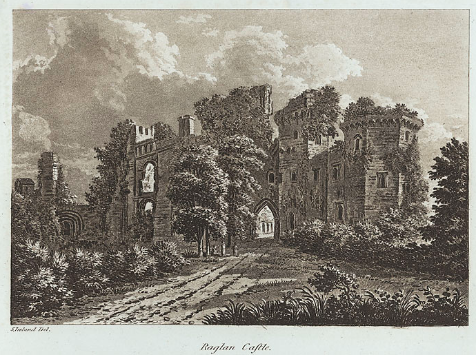
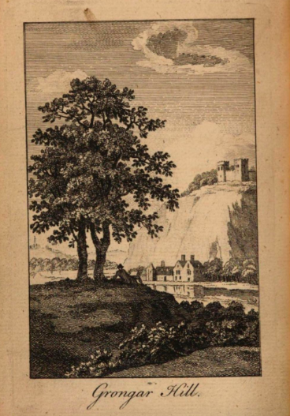

Robert Bloomfield and John Dyer: Poets in the Welsh Marches, by Tim Fulford
Bloomfield admired the poetry of the Welsh poet John Dyer, and borrowed from it in The Farmer’s Boy. It was a formative influence on the poem he wrote after first visiting Dyer’s native land, The Banks of Wye (1811), as John Goodridge shows:
In the rolling Cambrian hills for the first time, Bloomfield took upon himself his Welsh predecessor’s aim of exploring the effects on the reflective mind of recalling a spot marked out by both natural beauty and human history. In climactic verses on ruined Raglan castle, near Abergavenny, once the last stronghold of the Royalists in the Civil War, Bloomfield first evokes the triumph of nature over man’s achievements, however violent and heroic they once were:
Majestic Ragland! Harvests wave
Where thund’ring hosts their watch-word gave,
When cavaliers, with downcast eye,
Struck the last flag of loyalty:
Then, left by gallant Worc’ster’s band,
To devastation’s cruel hand
The beauteous fabric bow’d, fled all
The splendid hours of festival.
No smoke ascends; the busy hum
Is heard no more; no rolling drum,
No high-toned clarion sounds alarms,
No banner wakes the pride of arms;
But ivy, creeping year by year,
Of growth enormous, triumphs here.
Each dark festoon with pride upheaves
Its glossy wilderness of leaves
On sturdy limbs, that, clasping, bow
Broad o’er the turrets’ utmost brow,
Encompassing, by strength alone,
In fret-work bars, the sliding stone,
That tells how years and storms prevail,
And spreads its dust upon the gale.
(Banks of Wye, Book III, lines 19-40) [1]

The ivy embraces the stone; as the castle moulders, the plant prospers, until the monuments of martial valour are encased in a ‘wilderness of leaves’ and the sounds of human life give way to the stifling constriction of the creeper. These are sophisticated verses that demonstrate how much could still be achieved in the Augustan rhyming couplet. Partly this is a matter of allusion: Bloomfield alludes to a passage in Dyer’s ‘Grongar Hill’. Viewing the ivy-covered ruined tower as a symbol of time’s depredations, he invokes Dyer doing the same in some of the best-known lines in eighteenth-century verse:
ancient towers crown his brow,
That cast an aweful look below;
Whose ragged walls the ivy creeps,
And with her arms from falling keeps;
So both a safety from the wind
In mutual dependence find.
’Tis now the raven’s bleak abode;
’Tis now the apartment of the toad;
And there the fox securely feeds;
And there the pois’nous adder breeds,
Conceal’d in ruins, moss, and weeds;
While, ever and anon, there falls
Huge heap of hoary moulder’d walls.
Yet time has seen, that lifts the low,
And level lays the lofty brow,
Has seen this broken pile complete,
Big with the vanity of state;
But transient is the smile of Fate!
A little rule, a little sway,
A sunbeam in a winter’s day,
Is all the proud and mighty have
Between the cradle and the grave.
(71-92) [2]

Illustration from The Poems of John Dyer (London, 1770)
And Bloomfield also invokes Milton, whose serpent Satan, bringing destruction into Eden, is not far behind the snake-like plant that ‘with pride upheaves’ itself at the tower’s expense. Recognising these allusions, readers expect what follows to be a meditation on the inevitability of decay, loss and mortality. This expectation in turn lends urgency to the passage’s lexical vividness, rhetorical insistence and syntactical energy: Bloomfield pressures his reader to feel awed and threatened by a nature that, in the figure of the ivy, represents the triumphant and vampiric power of death, supporting itself on the works of mankind. This is a post-Edenic fallen world, where nature is both beautiful (as in the glossiness of the leaves) and menacing because time, death and—in Miltonic terms—sin are fundamental to its growth. It is a world, too in which nature and humanity (here represented by historical monuments to human deeds and achievements) are at odds.
Bloomfield continues with a meditation on time, history and nature that is in productive tension with the poetry to which he is alluding—engendered by it yet contradicting what it suggests:
The man who could unmoved survey
What ruin, piecemeal, sweeps away;
Works of the pow’rful and the brave,
All sleeping in the silent grave;
Unmoved reflect, that here were sung
Carols of joy, by beauty’s tongue,
Is fit, where’er he deigns to roam,
And hardly fit—to stay at home.
Spent here in peace,—one solemn hour
(’Midst legends of the Yellow Tower,
Truth and tradition’s mingled stream,
Fear’s start, and superstition’s dream)
Is pregnant with a thousand joys,
That distance, place, nor time destroys;
That with exhaustless stores supply
Food for reflection till we die.
(Banks of Wye, III, 41-56)
‘What ruin, piecemeal, sweeps away’ echoes the lines Johnson added to Goldsmith’s Deserted Village, ‘trade’s proud empire hastes to swift decay / As ocean sweeps the labour’d mole away’. [3] Thus Bloomfield bolsters his illustrative use of landscape imagery by calling on the magisterial self-confidence with which Johnson links social comment to natural event. Not for Bloomfield, however, Johnson’s certainty about the enduring power of independence (‘While self-dependent power can time defy / As rocks resist the billows and the sky’ (Deserted Village, lines 429-30); his meditation on time traces a more intricate, introspective route—a Wordsworthian route. ‘[O]ne solemn hour / . . . / Is pregnant with a thousand joys’ is conceptually close to Wordsworth’s ‘One impulse from a vernal wood / May teach you more of man, / Of moral evil and of good, / Than all the sages can’ from ‘The Tables Turned’, although for Bloomfield it is the encounter with nature’s overwhelming of humanity’s works, rather than solely with its beauty, that makes visiting the spot so endlessly educative. The surprising word here is ‘joys’: as in ‘Tintern Abbey’ the visitor unexpectedly derives joy from a scene that should, because it reveals the passing of time, produce melancholy. This is, then, no simplistic sightseeing event, no mere touristic picturesque, but a complex response that discovers, as the paradoxical one/thousand phrasing suggests, a complex of feelings in a brief encounter. These feelings are joys, despite the evidence of destruction that causes them, because they fertilise a human activity that turns out to be less vulnerable to time than castles and towers are—the activity of reflection that vivifies the mind and restores the past in memory and that, though it may die with us, survives in the form of ‘legends’ and tradition—the stories, songs and poems that we make and that others repeat after us. And these, implicitly, renew the ‘carols of joy’ that long-dead denizens of the castle once sang with ‘beauty’s tongue’. This, of course, is an implicit poetic; Bloomfield, in the poem he is deriving from past poems, is adding another turn to the traditions, legends and songs that allow us to redeem from oblivion the works of the past—and survive beyond ourselves. Allusion is here the key—the result and guarantor of reflection: alluding joyfully in the poem, he retrieves the songs of yore from the ivy’s clutches—demonstrating that poetry survives death even when, as in ‘Grongar Hill’, it asserts death’s all-encompassing power. This is to use the fact of allusion to counter the meaning of the words alluded to; it is also, therefore, to assert its corrective power, and Bloomfield own redemptive power as the allusive poet—although the assertiveness is muted because Bloomfield aligns his own act of redemption with that of tradition. Verse endures—is renewed in allusion—when all else is confined to a brief span ‘between the cradle and the grave’.
As a response to landscape, and to ruins, Bloomfield’s Raglan meditation is as profound, though not as self-foregrounding, as ‘Tintern Abbey’, to which it compares in its intimation of the ability of the human mind to overcome time’s depredations when that mind, fertilised by an encounter with a temporally-shaped landscape, is prompted to reflect upon itself and assert its power of song. But it remains isolated, lost in a poem of occasional brilliance that was published without its more original lines and without the prose journal and sketches that should have accompanied it. Bloomfield missed a chance, owing to his booksellers’ reluctance and his own inhibiting consciousness of what was proper for a labourer-visitor writing at the touring-gentry’s behest. As a result it was easy to neglect the merits of his Wye: literary criticism, although idealising a fellow nature-poet’s imaginative response to the Wye valley, damned the poem with faint praise. In the twentieth century, Bloomfield’s reputation dwindled to nothing. If, after Wordsworth’s ‘Tintern Abbey’, the Wye was a critical testing ground for Romantic poetry, then Bloomfield failed the test. This failure was not of his own making: his Raglan meditation shows that Wordsworth’s egotistical sublime was not the only way to bring into being a new and distinctive response to landscape. Bloomfield’s ‘Dyer’ poetry was also an innovative and individual discourse—The Banks of Wye was a celebration of tourism as a social amusement that the sober Wordsworth could not have made, but that still allowed for meditations on nature as intense as Dyer’s famous response to Grongar Hill.
Tim Fulford
[1] See the edition of the poem on this website. BACK
[2] ‘Grongar Hill’ in Poems by John Dyer (London, 1761), p. 13. BACK
[3] Oliver Goldsmith, The Deserted Village (London, 1770), p. 23, lines 427-28. BACK